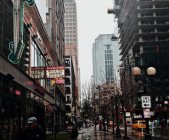
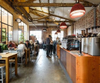
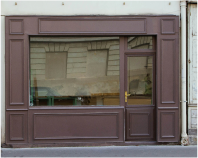
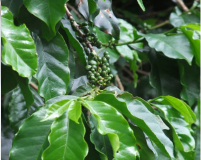
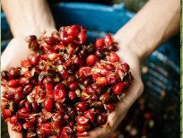

喫茶
タロウ
タロウの想い
The Hearts of Taro
修行前
夢の芽生え
幼いころから、両親の喫茶店に漂う香りと温かな空気に包まれて育ちました。心地よいひとときをお客様に提供する両親の姿を見て、
「いつか自分も、誰かの心を癒す空間をつくりたい」
と、ずっと夢見てきたのです。その想いを現実にするため、「本場で技術を磨き、最高の一杯を届けたい」という決意を胸に、修行の道へと踏み出しました。
幼いころから、両親の喫茶店に漂う香りと温かな空気に包まれて育ちました。心地よいひとときをお客様に提供する両親の姿を見て、
「いつか自分も、誰かの心を癒す空間をつくりたい」
と、ずっと夢見てきたのです。その想いを現実にするため、「本場で技術を磨き、最高の一杯を届けたい」という決意を胸に、修行の道へと踏み出しました。
修行中
挑戦と成長の日々
修行の場として決めたのは、コーヒー文化の本場であるシアトルとメルボルン。シアトルでは、言語の壁にぶつかり、コミュニケーションに苦労する日々が続きました。メルボルンでは、繊細な抽出技術に悩まされ、何度も試行錯誤を繰り返しましたが、地元のバリスタたちの助けもあり、少しずつ成長していきました。この過程で、技術や知識だけでなく、粘り強く学び続ける姿勢の大切さに気づかされました。


修行後そして今
心をこめた一杯
異国の地で苦しみながらも、カウンター越しにお客様と心が通じ合った瞬間、コーヒーが生む小さな絆の力に感動しました。
この経験から、
「一杯一杯に心を込めて」
という信念が生まれ、ただ美味しいだけでなく、お客様にとって特別な体験となる一杯を届けたいという思いがさらに強まりました。
両親のお店への愛情は深くありましたが、私の感性で新しい価値を表現したいという気持ちが生まれ、旅先で出会った味や文化を日本に届けたいという強い思いを胸に、自分のお店をオープンしました。
異国の地で苦しみながらも、カウンター越しにお客様と心が通じ合った瞬間、コーヒーが生む小さな絆の力に感動しました。 この経験から、 「一杯一杯に心を込めて」 という信念が生まれ、ただ美味しいだけでなく、お客様にとって特別な体験となる一杯を届けたいという思いがさらに強まりました。 両親のお店への愛情は深くありましたが、私の感性で新しい価値を表現したいという気持ちが生まれ、旅先で出会った味や文化を日本に届けたいという強い思いを胸に、自分のお店をオープンしました。

今後の挑戦
新しい産地の豆を使った季節限定メニューを企画したり、焙煎体験イベントを開催していきたいと考えています。
また、SNSやブログを通じてコーヒーの魅力をもっと多くの方に伝えていきたいです。
コーヒーがつなぐ笑顔の未来
喫茶タロウでは、
1杯のコーヒーに世界を変える力を
込めています。
フェアトレードのコーヒー豆をご存じですか？
フェアトレードのコーヒーとは、発展途上国の農家が適正な価格でコーヒーを売ることができるようにサポートする取り組みです。
これにより、農家は市場価格の変動に影響されることなく安定した収入を得られます。収入が安定することで、生活が改善され、子どもたちの教育や医療の充実にもつながります。
また、フェアトレードでは環境にやさしい栽培方法を推奨しています。これにより、地球に負担をかけない持続可能な農業が実現されます。こうした取り組みのおかげで、私たちが飲む一杯のコーヒーは生産者にも地球にもやさしいものとなります。

フェアトレードのコーヒーを選ぶことで、 生産地の農家は適正な対価を受け取り、安定した生活を手に入れることができます。 そして、お客様も1杯のコーヒーを通じて社会貢献に参加できるのです。コーヒーの豊かな香りと味わいを楽しみながら、世界をより良い場所に変える一歩を踏み出してみませんか？ 生産者にやさしく、地球に配慮した選択が、あなたの日常に特別な意味を加えてくれます。

コーヒーがつなぐ笑顔の未来
喫茶タロウでは、
1杯のコーヒーに世界を変える力を
込めています。
フェアトレードのコーヒー豆をご存じですか？
フェアトレードのコーヒーとは、発展途上国の農家が適正な価格でコーヒーを売ることができるようにサポートする取り組みです。
これにより、農家は市場価格の変動に影響されることなく安定した収入を得られます。収入が安定することで、生活が改善され、子どもたちの教育や医療の充実にもつながります。
また、フェアトレードでは環境にやさしい栽培方法を推奨しています。これにより、地球に負担をかけない持続可能な農業が実現されます。こうした取り組みのおかげで、私たちが飲む一杯のコーヒーは生産者にも地球にもやさしいものとなります。
フェアトレードのコーヒーを選ぶことで、 生産地の農家は適正な対価を受け取り、安定した生活を手に入れることができます。 そして、お客様も1杯のコーヒーを通じて社会貢献に参加できるのです。コーヒーの豊かな香りと味わいを楽しみながら、世界をより良い場所に変える一歩を踏み出してみませんか？ 生産者にやさしく、地球に配慮した選択が、あなたの日常に特別な意味を加えてくれます。